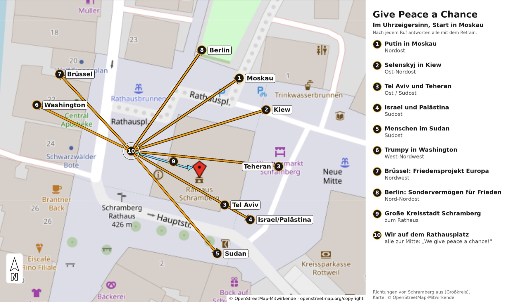

Friedenslieder
Samstag, 14. November 2026, 11 Uhr · Rathausplatz Schramberg
„Ohne Frieden ist alles nichts.“
So singen wir jedes Lied
- 1SummenDie Melodie kommt erst ohne Worte, bis alle sie hören.
- 2RefrainDann singen alle den Teil, den jeder kennt.
- 3StrophenErst danach kommen die Strophen dazu.
Ablauf
Bella Ciao (Friedensstrophen)
Melodie: trad. (italienisches Partisanenlied) · Friedensstrophen: Dr. Theodor Ziegler, Baiersbronn
- Melodie 1× auf „la" vorsingen, alle steigen ein
- Zeilen 1–2 werden vorgesungen, ab ‖: singen alle mit, die Wiederholung ist zum Einsteigen da
Am7 nur vor der Wiederholung
Kumbaya
Traditional (Spiritual, USA)
- Melodie 1× ganz auf „mm" summen, alle summen mit
- Strophe 1 singen
- die nächste Strophe wird vorher angesagt („Someone's singing!")
- Schluss: Strophe 1 noch einmal, nur gesummt
Hellere Akkorde sind aus Strophe 1 übertragen, bitte beim Einspielen prüfen.
Die Gedanken sind frei
Text & Melodie: trad. (um 1800) · neue Strophen: Mark Finnern + KI, Friedensstimmen Schramberg (16.11.2024)
- Melodie 1× summen
- die Original-Strophe singen alle, die kennt fast jeder
- dann alle sechs neuen Strophen
Hellere Akkorde sind aus Strophe 1 übertragen, bitte beim Einspielen prüfen.
Original
Neue Strophen (16.11.2024)
Sag mir, wo die Blumen sind
Musik: Pete Seeger (1955) · dt. Text: Max Colpet (1962)
- Melodie 1× auf „u" summen
- die Strophen werden vorgesungen, die beiden Schlusszeilen jeder Strophe singen alle
- deutsche und englische Strophen haben dieselbe Akkordfolge
Den Text findest du hier nicht, er ist urheberrechtlich geschützt. Den Refrain lernen wir vor Ort nach Gehör.
Der erste Friede
Text & Musik: Iria Schärer & Raimund Mauch · Text nach Black Elk (Oglala-Lakota)
- Intro auf der Gitarre
- Refrain zuerst: das Mantra „Om Shanti Om" summen, dann singen alle
- Strophe wird vorgesungen, danach der Refrain
Down by the Riverside
Traditional (Spiritual, gedruckt 1918)
- Refrain zuerst lernen: eine Zeile wird vorgesungen, alle singen sie nach, bis er sitzt
- dann die Strophen, nach jeder Strophe der Refrain
Hellere Akkorde sind aus Strophe 1 übertragen, bitte beim Einspielen prüfen.
Freude, schöner Götterfunken
Text: Friedrich Schiller (1785) · Melodie: Ludwig van Beethoven (1824)
- Melodie 1× summen, die kennt jeder
- Strophen 1 bis 4
- zum Schluss die letzten vier Zeilen noch einmal
We Shall Overcome
Traditional (Gospel, Bürgerrechtsbewegung)
- Langsam. Melodie 1× summen
- Strophe 1 singen alle
- vor jeder neuen Strophe wird deren erste Zeile kurz vorgerufen („lining out", wie in der Bürgerrechtsbewegung)
- zum Schluss Hände fassen, Strophe 1 noch einmal, die letzte Runde leise summen
Lass die Hoffnungsmaschine laufen
Text & Musik: Erdmöbel
- Intro, dabei den Refrain 1× summen
- Refrain singen alle, Strophen werden vorgesungen
Den Text findest du hier nicht, er ist urheberrechtlich geschützt. Den Refrain lernen wir vor Ort nach Gehör.
Text & Akkorde auf Ultimate Guitar ↗
Give Peace a Chance
Text & Musik: John Lennon (1969)
- Nur den Refrain singen. Einmal vorsingen, alle antworten
- Klatschen auf 2 und 4, so lange es trägt
- Rufe in alle Himmelsrichtungen: Die Vorsängerin oder der Vorsänger ruft, alle drehen sich in die Richtung und antworten mit dem Refrain
- Strophen weglassen
- Putin in MoskauNordost
- Selenskyj in KiewOst-Nordost
- Tel Aviv und TeheranOst / Südost
- Israel und PalästinaSüdost
- Menschen im SudanSüdost
- Trumpy in WashingtonWest-Nordwest
- Brüssel: Friedensprojekt EuropaNordwest
- Berlin: Sondervermögen für FriedenNord-Nordost
- Große Kreisstadt Schrambergzum Rathaus
- Wir auf dem Rathausplatzalle zur Mitte, Antwort: „We give peace a chance!“

Außerdem in unserem Repertoire, als Vortrag
- Es ist an der Zeit Hannes Wader, nach Eric Bogle
- Le Déserteur / Der Deserteur Boris Vian
- Nein, meine Söhne geb ich nicht Reinhard Mey
- Leben einzeln und frei Hannes Wader
- Streets of Minneapolis Bruce Springsteen
- Für die Liebe
- Gegen das Geläut der Leute
- Schon so lang (Bin auf meinem Weg)